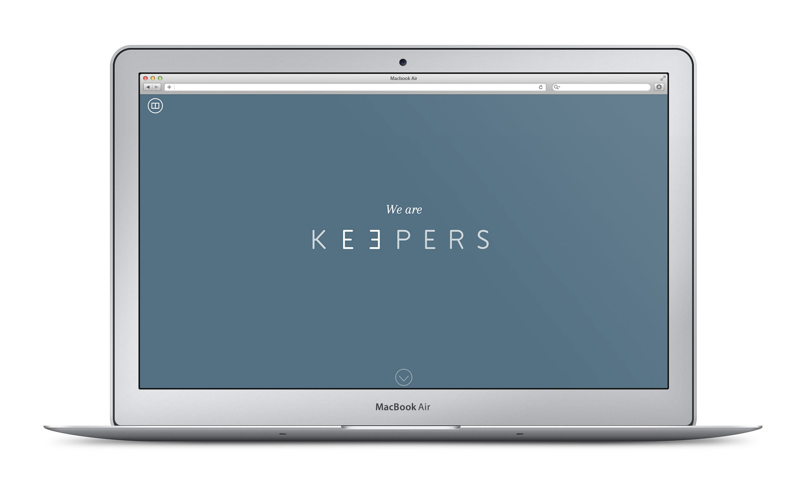
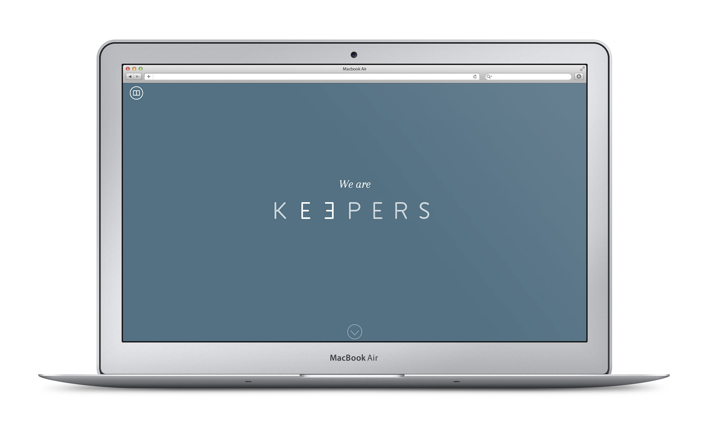

It means I specialise purely in SASS / CSS3, HTML5 and responsive web design. I don't write backend, dynamic code or even Javascript.
Why? Specialists make the world a beautiful place and that extends to the web. They care about the little things and work with other specialists to create truly incredible products.
I love what I do and the people I get to work with.
I learn new things daily to make me a faster, more efficient and productive developer.


As co-founder and CTO my role in StageLabel focuses on designing and developing the UI for stagelabel.com, cultivating a clean and minimal brand alongside our lead designer and working with our lead backend developer to integrate frontend technology with our AngularJS / Rails backend.
I also build and deliver responsive email marketing templates for StageLabel and help facilitate extensive user testing to ensure we continue to delivery a product our users are interested in returning to daily.
Visit WebsiteIn late 2014 I was invited by Keepers to help develop a new UI for their brand relaunch. The vision for the frontend build included advanced animation triggering, a responsive fullscreen interface, SVG scalable imagery, custom fonts, backwards compatibility to IE8 and more.
Visit Website 
